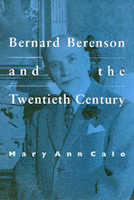

<body bgcolor="#FFFFFF" text="#000000" link="#0000FF" vlink="#CC0000" alink="#CC0000"><center><hr width="350" size="1" align="center" noshade>Berenson's legacy to modern art is revealed through his writings<hr width="350" size="1" align="center" noshade><p><a href="https://cdcshoppingcart.uchicago.edu/Cart/ChicagoBook.aspx?ISBN=9781566391160&&PRESS=temple" target="_top">Buy this book!</a> | <a href="https://cdcshoppingcart.uchicago.edu/Cart/Cart.aspx?PRESS=temple" target="_top">View Cart</a> | <a href="https://cdcshoppingcart.uchicago.edu/Cart/Cart.aspx?PRESS=temple" target="_top">Check Out</a></p><p></p></center><!--none//--><h1>Bernard Berenson and the Twentieth Century</h1>
<h3>Mary Ann Calo</h3>
<P>cloth 1-56639-116-4 $69.95, Feb 94, <FONT COLOR=#990033>Out of Print</FONT>
<br>paper 1-56639-117-2 $25.95, Jan 94, <FONT COLOR=#990033>Out of Stock Unavailable</FONT>
<BR> 288 pp
5.5x8.25
14&nbsp;halftones
</P><BLOCKQUOTE><I>"Calo is clear, erudite but not difficult, informative, and interesting.... [Her] work will be like a gust of fresh air.... [It] shows us a way to understand Berenson fairly and adds a vision of him embedded in the intellectual pursuits of his time. This is a valuable source book."</I>
<br>&#151<b>Mary Vernon</b>, Meadows School of Art, Southern Methodist University<I></I></BLOCKQUOTE>
<p>While Bernard Berenson's roles a connoisseur, Renaissance art expert, defender of Western culture, and arbiter of taste <I>extraordinaire</I> are well known, his role as critic and theorist of modern art has until now been little understood. Mary Ann Calo's new intellectual biography is the first study to place Berenson's career in the context of modernist art and criticism.
<p>The unequivocal hostility towards modern art Berenson expressed late in life does not adequately represent his views, Calo argues. Tracing his writings over half a century, she examines his transition from an innovative modern critic to a reactionary conservative who used his influence to discredit twentieth-century art and to preserve the notion of culture as aristocratic privilege.
<p>Calo point out how Berenson's increasing social, political, and aesthetic conservatism belies his youthful interest in modern art. Her focus on the development of Berenson's aesthetic principles and intellectual life demonstrates that his theory of art anticipated, and perhaps made possible the modernist art he loathed.
<BR>&nbsp;<h2>Excerpt</h2><P>Excerpt available at <a href="http://www.temple.edu/tempress">www.temple.edu/tempress</a></p>
<BR>&nbsp;<h2>Contents</h2><P>
<p>Acknowledgments
<br>Introduction
<p>1. Appraising Berenson
<br><I>Berenson and Early Modernism;
Berenson as a Theorist;
Berenson as a Writer;
Characterizing Berenson's Achievement</I>
<p>2. Defining Berenson's Modernity
<br><I>Introduction;
</I>The Venetian Painters of the Renaissance<I>;
</I>Lorenzo Lotto<I>;
Egisto Fabbri and Hermann Obrist;
</I>The Florentine Painters of the Renaissance<I>;
</I>The Central Italian Painters of the Renaissance<I></I>
<p>3. Berenson at the Crossroads
<br><I>Connoisseurship Versus Criticism;
</I>A Sienese Painter of the Franciscan Legend<I>;
</I>The North Italian Painters of the Renaissance<I>;
"The Decline of Art";
Critical Writing During the Duveen Years</I>
<p>4. Berenson's Last Years
<br><I>The Sage of Settignano;
</I>Aesthetics and History in the Visual Arts<I>;
"Decline and Recovery in the Figure Arts";
The Performing Monkey;
The Geometricization of the Individual: Humanism at Risk;
</I>Seeing and Knowing<I></I>
<p>Conclusion
<br>Notes
<br>Bibliography
<br>Index
</P><BR>&nbsp;<H2>About the Author(s)</H2>
<P><b>Mary Ann Calo</b>, Visiting Assistant Professor at Colgate University, has for a decade taught art history courses in Florence, Italy.</P>
<BR><H2>Subject Categories</H2>
<p><A HREF="/tempress/art.html" TARGET="_top">Art and Photography</a>
<BR><A HREF="/tempress/history.html" TARGET="_top">History</a>
</p>
<p align="center"><a href="https://cdcshoppingcart.uchicago.edu/Cart/ChicagoBook.aspx?ISBN=9781566391160&&PRESS=temple" target="_top">Buy this book!</a> | <a href="https://cdcshoppingcart.uchicago.edu/Cart/Cart.aspx?PRESS=temple" target="_top">View Cart</a> | <a href="https://cdcshoppingcart.uchicago.edu/Cart/Cart.aspx?PRESS=temple" target="_top">Check Out</a></p><p><font face="Arial" size="1"><a href="copyright.html" onMouseOver="window.status='Web Copyright Policy';return true;" onMouseOut="window.status=''" title="Web Copyright Policy">&copy;</a> 2015 <a href="http://www.temple.edu" target="new" onMouseOver="window.status='Link to Temple University home page';return true;" onMouseOut="window.status=''" title="Link to Temple University home page">Temple University</a>. All Rights Reserved. http://www.temple.edu/tempress/titles/1014_reg.html</font></p>